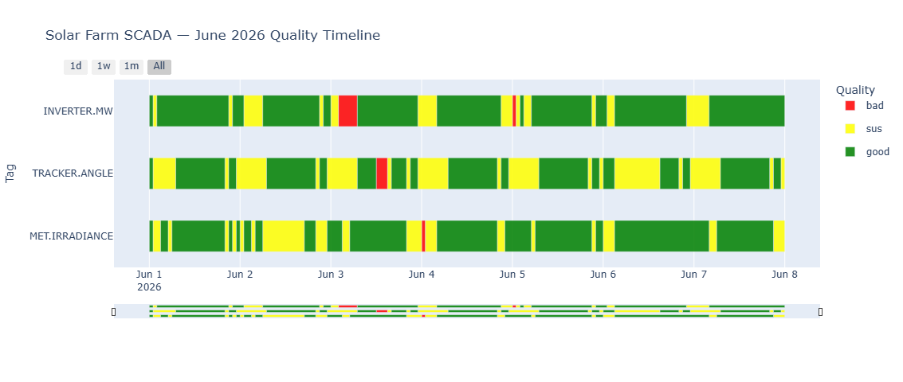
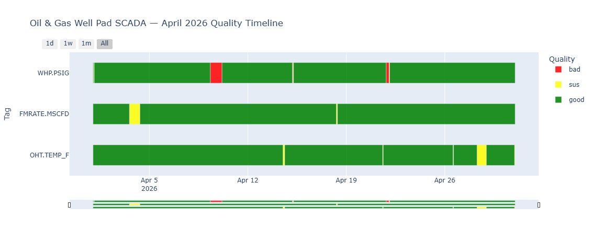

Quickstart
import tsqc
import pandas as pd
df = pd.read_csv("sensor_data.csv")
result = tsqc.check(df, assume_tz="UTC")
result.plot().show()
print(result.summary())That is the entire API. check() returns a QCResult with all downstream methods.
Features
Built-in Rules
Null, Flatline, Delta, and Range rules cover the majority of real-world sensor faults. Custom rules accept any callable.
Timeline Chart
Plotly horizontal Gantt chart with one row per tag, color-coded by quality, interactive hover, and range selector.
YAML Configuration
Write rules in a plain text file. No Python required. Glob patterns supported for tag matching.
Timestamp Health
Detects gaps, duplicates, non-monotonic timestamps, frequency drift, and DST ambiguities.
Offline HTML Report
Self-contained export with embedded Plotly chart, summary tables, and per-issue breakdown. No CDN needed.
Pandas Native
Works with any DataFrame containing timestamp, tag_name, and value columns. Single-tag mode supported.
Quality Labels
When multiple rules fire, the worst level wins: bad > sus > good. Triggered rule names appear in a pipe-delimited quality_reasons column.
Example Output


Input & Output
Input
| Column | Type | Notes |
|---|---|---|
| timestamp | datetime | UTC-aware or tz-naive (pass assume_tz) |
| tag_name | str | Sensor identifier. Omit column or pass tag_col=None for single-tag mode. |
| value | float | The measurement to check. |
Output
result.df adds two columns to the original DataFrame:
| Column | Values | Notes |
|---|---|---|
| quality | "good", "sus", "bad" | Worst-level rule wins |
| quality_reasons | "flatline|range" | Pipe-delimited triggered rule names |
YAML Config
# tsqc_rules.yaml
default_rules:
- check: null
level: bad
- check: flatline
window: 1h
min_delta: 0.001
level: sus
- check: delta
threshold: 50.0
level: sus
tag_rules:
"FOREBAY.LEVEL":
- check: range
min: 900
max: 1100
level: bad
"GENERATOR.*":
- check: range
min: 0
max: 200
level: bad
- check: flatline
window: 30min
min_delta: 0.5
level: susresult = tsqc.check(df, rules="tsqc_rules.yaml")
result.summary()
result.issue_summary()
result.check_timestamps()
result.export_report("report.html")API Reference
tsqc.check(df, ...)
| Argument | Default | Description |
|---|---|---|
| time_col | "timestamp" | Name of the timestamp column. |
| tag_col | "tag_name" | Name of the tag column. None for single-tag mode. |
| value_col | "value" | Name of the value column. |
| rules | None | List of Rule objects, path to a YAML file, or None for auto-configured defaults. |
| assume_tz | None | IANA timezone for tz-naive input, e.g. "UTC" or "America/Chicago". |
QCResult Methods
| Method | Returns | Description |
|---|---|---|
| .df | DataFrame | Annotated input with quality and quality_reasons columns. |
| .summary() | DataFrame | Per-tag good/sus/bad percentages, sorted by pct_bad descending. |
| .plot(tags, start, end) | Plotly Figure | Multi-tag quality timeline chart. |
| .issue_summary() | DataFrame | Contiguous bad/sus segments with start, end, row count, and duration. |
| .check_timestamps() | DataFrame | Gaps, duplicates, non-monotonic timestamps, frequency drift, DST issues. |
| .export_report(path) | None | Self-contained HTML report (no external CDN). |
Installation
pip install timeseries-qc
# Development
git clone https://github.com/nagusubra/timeseries-qc.git
cd timeseries-qc
pip install -e ".[dev]"Three production dependencies: pandas ≥ 1.5, plotly ≥ 5.0, pyyaml ≥ 6.0.
Comparison
| timeseries-qc | Pecos | SaQC | Great Expectations | |
|---|---|---|---|---|
| Classification | Good / Sus / Bad | Pass / Fail | Flags | Pass / Fail |
| Timeline chart | Yes | No | No | No |
| YAML config | Yes | No | JSON | No |
| Time-series native | Yes | Yes | Yes | No |
Known Limitations (v0.1.0)
- Pandas only. PySpark and Polars support are not yet implemented.
- Tag-specific YAML rules add to defaults; they do not replace them.
- Visualization requires Plotly. Matplotlib output is not supported.
DeltaRuleuses point-to-point diff. Rolling-window delta is planned for v0.2.